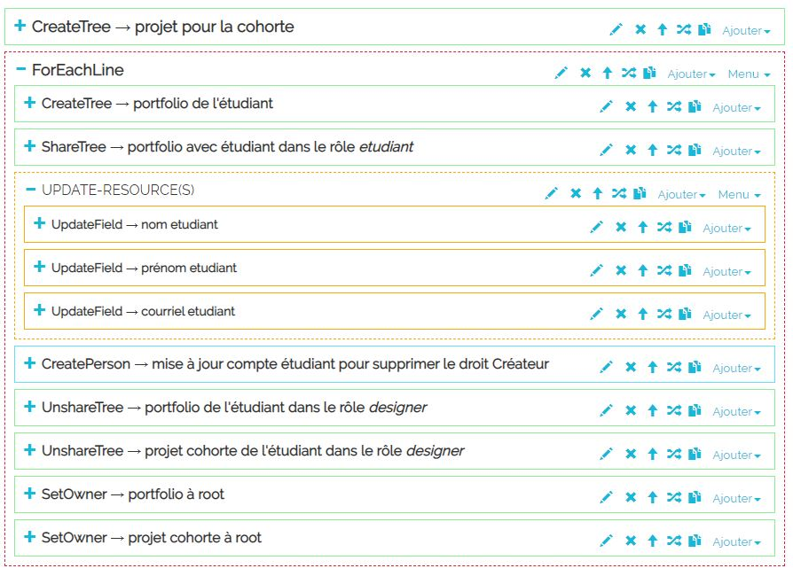

Il est possible d'automatiser la création d'un portfolio lors de la première connexion d'un
utilisateur. Dans ce cas Karuta exécutera un batch créé puis spécifié par le designer dans le fichier
application/js/specific.js.

Condition d'exécution
Pour que le batch de création s'exécute lors de la première connexion de l'utilisateur, ce
dernier doit avoir le droit de création qui lui sera retiré à la fin de l'exécution du batch.
Il doit également avoir xlimited dans le champ Autre.

REMARQUE : si CAS est utilisé, Karuta créera automatiquement l'utilisateur avec comme username
l'identifiant CAS avec le droit de création et xlimited dans le champ Autre.
Étape 0 - Configuration du backend
Dans le fichier de configuration configKaruta.properties du backend il faut renseigner
les valeurs suivantes :
- casCreateAccount=y
- createAsDesigner=y
Étape 1 - Écriture du batch de création
Le batch doit inclure la création du ou des portfolios de l'utilisateur, le partage avec cet utilisateur dans le rôle désiré.
Il doit se terminer par :
- Retirer le droit de Créateur de l'utilisateur ;
- Départager les portfolios créés du l'utilisateur dans le rôle designer ;
- Changer le propriétaire des portfolios créés pour root.
Exemple de batch de création automatique :

Téléchargez ce modèle de batch ici.
Étape 2 - Spécification du batch
Le designer doit spécifier le batch de création ainsi que les variables globales utilisées dans le batch dans le fichier application/js/specific.js.
La valeur de la varable g_execbatch à la ligne 3 doit être true.

Détails du batch de création
Création du projet Cohorte
Dans notre exemple un projet Cohorte sera créé si il n'existe pas déjà.
Son code et libellé sera la valeur de la vaiable globale défini dans le fichier specific.js (année-mois)

Création du portfolio

Partage du portfolio

Mise à jour des ressources
Dans notre modèle de portfolio, il y a le nom, prénom et couriel de l'étudiant.

Départage du portfolio

Départage du projet

Changement de propiétaire du portfolio

Changement de propiétaire du portfolio